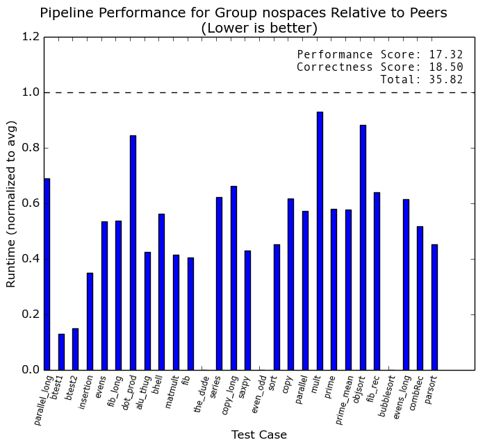

Back
N-way superscalar out-of-order processor
Designed an R10K style N-way out of order processor in Verilog.
For my major design experience at the the University of Michigan, I implemented a
MIPS R10K N-way superscalar out-of-order processor using Verilog. R10K is an algorithm that takes
advantage of register renaming in order to avoid false hazards (such as write-after-read
and write-after-write). Out-of-order design allows us to take advantage of instruction
level parallelism available in various programs.
Our processor was N-way, this means that the width of the pipeline could be parameterized. In our final submission, we set N to 2 because this maximized our clock period vs. cycles-per-instruction (CPI).
The below graph shows the relative performance of the processor. It performed faster on every benchmark relative to the class.
Our processor was N-way, this means that the width of the pipeline could be parameterized. In our final submission, we set N to 2 because this maximized our clock period vs. cycles-per-instruction (CPI).
The below graph shows the relative performance of the processor. It performed faster on every benchmark relative to the class.

Digital phase locked-loop for laser
Implemented portable digital control electronics required for phase-lock looping a frequency comb.
I worked on implementing the digital control electronics for over a year at IMRA America, Inc.
I cannot reveal much on the details, but I was able to demonstrate its abilities at the
annual CLEO conference in San Jose, where it received much praise. I was the primary person
responsible for this project, and thus implemented front-end interface, back-end, controller, and FPGA code.
The below picture is of the IMRA booth at CLEO, which demoed my digital electronics and
their optical system. Check out the paper.

Delta sigma modulator
Wrote a delta sigma modulator used for an ADC in Verilog.
From December, 2016 to April, 2017 I collaborated with a PhD student
from the University of Michigan on a project to design a delta sigma
modulator which runs at 1.3 GHz. I wrote, debugged, and verified Verilog for an ASIC. I used
Synopsys VCS to synthesize. The ASIC has been taped out and testing has begun. Preliminary phases
look very promising and there will be a publication soon.
RC car laser arena game
Built an arena-style laser tag style game. Players control
RC cars via nintendo 64 controller. Two modes of play: arena
and survival.
The laser arena was a game designed by myself as well as 3 others. My team designed
game that takes place in a 5x10 arena. There are two players. Each player controls a car via
a nintendo 64 controller that communicates over XBee. Each car had a SmartFusion SoC on board
that communicated with another SmartFusion which acted as a control panel.
We used a lot of various embedded systems techniques to implement this project, including timers, interrupts, serial communication (XBee, N64), and memory-mapped IO. Code is available upon request. To see more, watch the video below!
We used a lot of various embedded systems techniques to implement this project, including timers, interrupts, serial communication (XBee, N64), and memory-mapped IO. Code is available upon request. To see more, watch the video below!
Vocabulary tool
A tool I made for learning words in other languages.